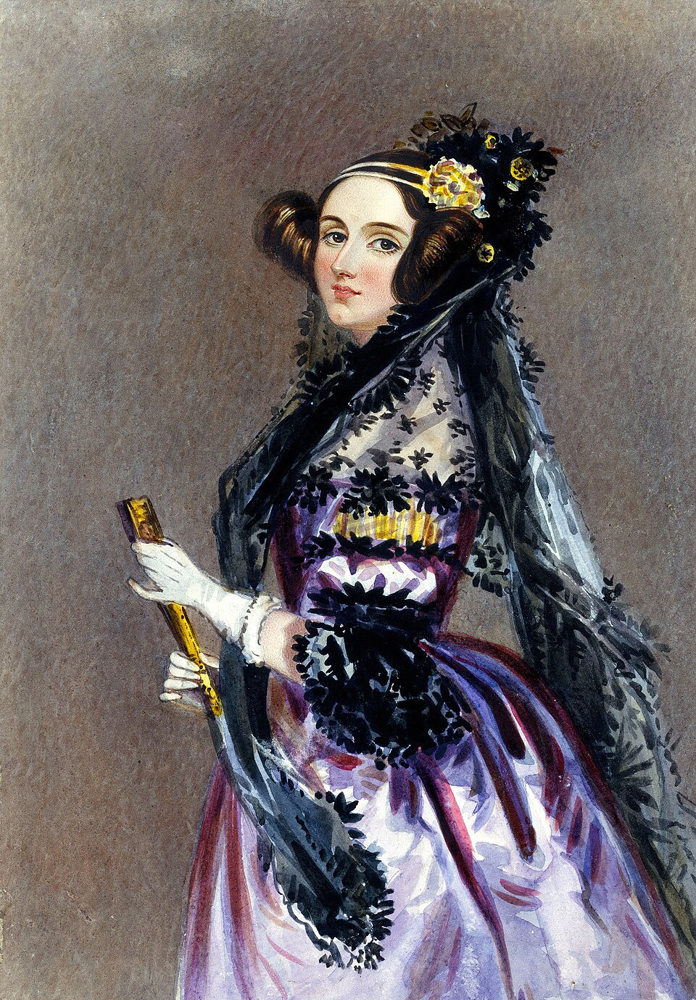

Женщина создала первую программу
Ада Лавлейс (1815–1852) считается первой в мире женщиной-программистом. Она написала первый в истории алгоритм — для вычисления чисел Бернулли на аналитической машине Чарльза Бэббиджа (сама машина так и не была построена при её жизни).
В своих работах Ада ввела понятия «цикл» и «рабочая ячейка» (переменная), а ещё предвидела, что вычислительные машины смогут не только считать, но и, например, сочинять музыку.
В честь неё назвали язык программирования «Ада» и учредили Международный день Ады Лавлейс.